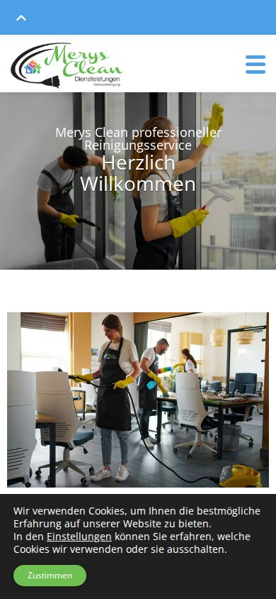
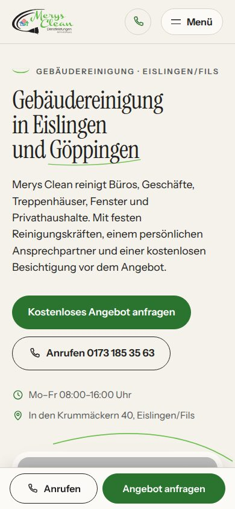
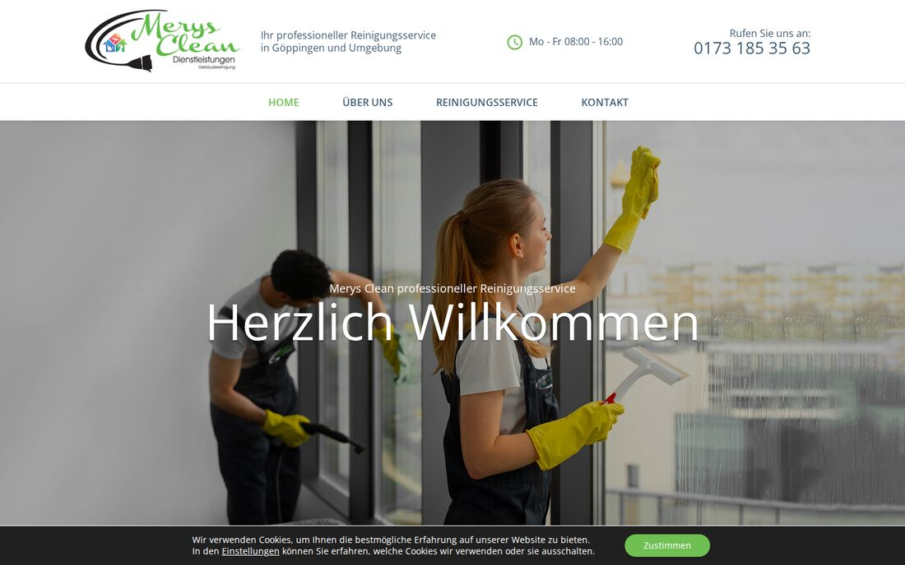
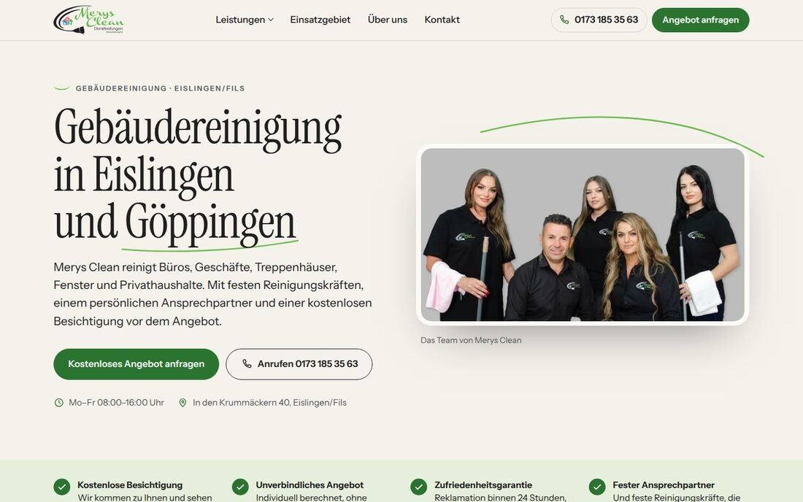
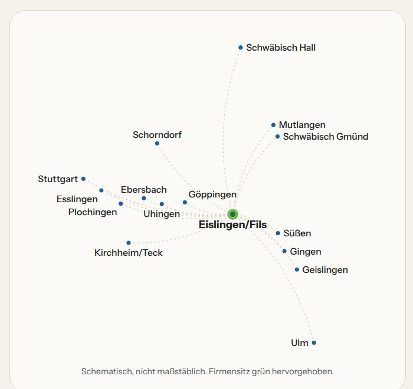
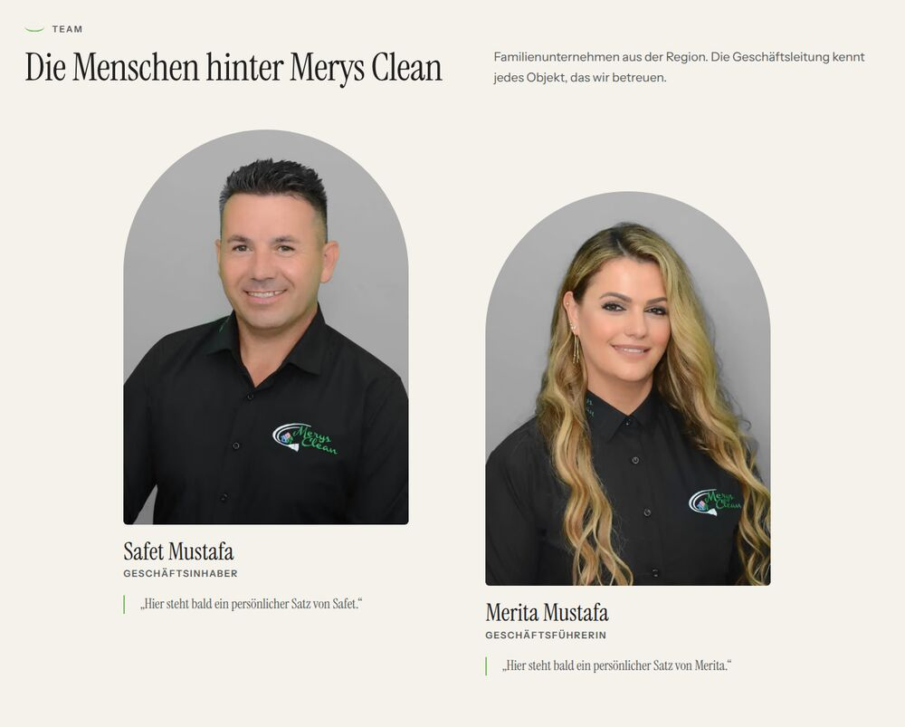
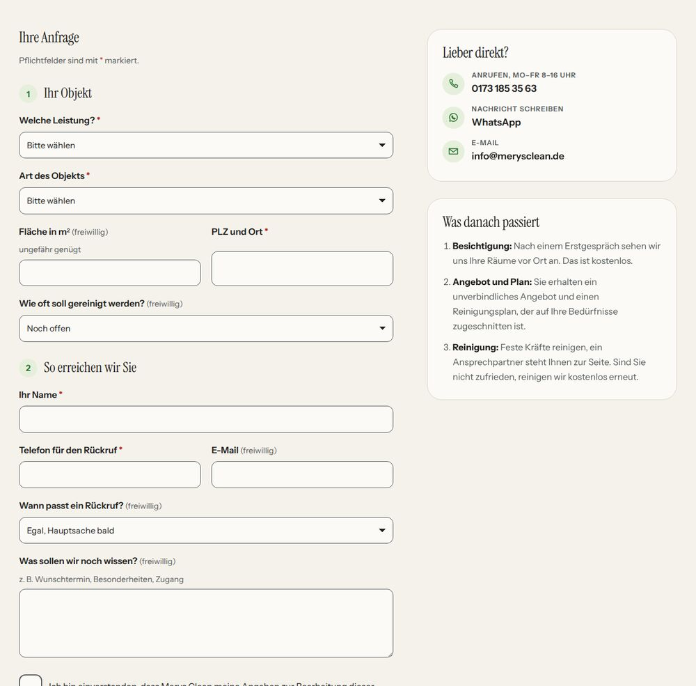

Gleiche Firma, gleiche Leistungen, gleiche Kontaktdaten. Aber am Handy sehen Ihre Kunden sofort, was Sie
machen, wo Sie arbeiten und wie sie ein Angebot bekommen: mit einem Fingertipp zum Anruf oder zum Anfrageformular.
Heute

Erster Bildschirm am Handy: „Herzlich Willkommen“, kein Anruf- oder Anfrageknopf, Cookie-Hinweis unten.Neu

Erster Bildschirm am Handy: Leistung und Ort, „Kostenloses Angebot anfragen“, Anrufen, Zeiten, Adresse.
bisher 2,2 MB
160 KB
Datenmenge der Startseite
Google-Prüfwert
100
Leistung am Handy (von 100)
Hauptinhalt sichtbar
1,5–1,7 s
am Handy, Labormessung
Cookie-Banner
keins
keine Cookies, keine fremden Dienste
Die neue Seite ist ein fertiger Entwurf, den Sie am Handy ausprobieren können.
Bevor sie online geht, gehen wir gemeinsam alle Angaben durch: Nichts davon ist ohne Ihre Freigabe.
1 / 4Messung bisherige Seite: merysclean.de am 01.10.2026 am Computer (Chromium, erster Aufruf, 120 Anfragen).
Neue Seite: Vorschau am 01.10.2026, Datenmenge komprimiert am Handy (160 KB) und am Computer (159 KB) gemessen; Google Lighthouse
Handy-Profil, Median aus 3 Läufen. Für die bisherige Seite liegt kein Lighthouse-Wert vor. Werte schwanken je Messung leicht.
Aussagen zu Google-Platzierungen oder mehr Aufträgen sind damit nicht verbunden.
Ihre bisherige Seite
Vorher und nachher am Computer
Heute

Seriöser Eindruck, aber ohne Aussage, was Sie anbieten, und ohne Anfrageknopf.Neu

Ihr echtes Team im Bild, Leistung und Ort in der Überschrift, zwei klare Wege zur Anfrage.
Was uns an der bisherigen Seite aufgefallen ist
Wege, die ins Leere führen
Die vier Leistungs-Kacheln auf der Startseite und der Knopf „Unverbindliche Angebotsanfrage“ auf „Über uns“ führen auf eine
Fehlerseite (404). Der E-Mail-Link oben und unten auf jeder Seite funktioniert ebenfalls nicht.
Kein klarer Weg zur Anfrage
Auf der Startseite gibt es keinen Anfrageknopf. Am Handy ist die Telefonnummer hinter einem Balken versteckt, einen
sichtbaren Anrufknopf gibt es nicht. Der Cookie-Hinweis bedeckt rund ein Fünftel des Bildschirms.
Formular ohne Datenschutz-Hinweis
Das Kontaktformular fragt nur Name, Betreff, E-Mail und Nachricht ab, ohne Hinweis oder Häkchen zum Datenschutz.
Angaben zu Objekt, Fläche oder Ort, die Sie für ein Angebot brauchen, fehlen.
Fremde Dienste vor der Zustimmung
Google-Schriften, Google Maps (Kontaktseite) und Skripte des Hosters laden, bevor Besucher zustimmen. Die Datenschutzerklärung
von 2022 nennt sie nicht alle. Ob das rechtlich ein Problem ist, kann nur ein Fachmann verbindlich sagen.
Schwer und langsam
Die Startseite lädt am Computer rund 2,2 MB in 120 einzelnen Anfragen, dazu ein Werbevideo mit 3,5 MB. Ein großer Teil
davon ist Technik der gekauften Vorlage, die Ihre Kunden gar nicht sehen.
Keine Seiten für Ihre Leistungen
Es gibt keine eigene Seite je Leistung. Die Seite „Reinigung“ zeigt nur Bildkacheln, ohne Überschrift und ohne Text.
Wer etwa Treppenhausreinigung sucht, findet bei Ihnen keine Beschreibung dazu.
2 / 4Grundlage: Prüfung der Live-Seite merysclean.de am 01.10.2026 (alle 6 Seiten abgerufen, Links geprüft,
Bildschirmfotos und Netzwerkzählung mit Chromium). Keine Rechtsberatung.
Ihre neue Seite
Was die neue Seite bringt
Aufgeräumt, schnell und für Anfragen gebaut
Klare Struktur: vier Menüpunkte (Leistungen, Einsatzgebiet, Über uns, Kontakt) und überall der Knopf „Angebot anfragen“.
Eine Seite je Leistung: Büro und Gewerbe, Unterhaltsreinigung, Fenster und Glas, Treppenhaus, Privathaushalt, Umzugs-, Bauend- und Sonderreinigung.
Angebotsformular in zwei Schritten: „Ihr Objekt“ (Leistung, Objektart, Fläche, Ort) und „So erreichen wir Sie“, mit Datenschutz-Häkchen und Schutz vor Spam.
Anrufen und WhatsApp: am Handy eine feste Leiste unten mit „Anrufen“ und „Angebot anfragen“, WhatsApp im Menü und auf der Kontaktseite.
Karte des Einsatzgebiets: eigene Karte mit den 17 Orten Ihrer bisherigen Seite, ohne Google Maps; die Route gibt es als Link.
Team-Bereich: Safet und Merita Mustafa mit Foto, Rolle und Platz für einen persönlichen Satz.
Keine Cookies nötig: keine Cookies, kein Banner, keine fremden Dienste; die Schriften liegen auf dem eigenen Server.
Nichts geht verloren: Ihre alten Seitenadressen leiten auf die neuen Seiten weiter; Firma, Adresse und Zeiten sind für Google sauber hinterlegt.

Einsatzgebiet: Karte und Orte als Text

Über uns: die Menschen hinter Merys Clean

Angebot anfragen: Formular und direkte Wege
Gemessen an der neuen Startseite
100
Leistung (Google-Prüfwert, Handy)
100
Barrierefreiheit
100
Technik nach Google-Empfehlungen
100
Suchmaschinen-Grundlagen
160 KB
statt rund 2,2 MB Datenmenge
Außerdem: am Handy ist der Hauptinhalt nach 1,5 bis 1,7 Sekunden sichtbar, nichts
springt beim Laden (Verschiebung 0), und die Seite funktioniert von 320 bis 1920 Pixel Breite ohne seitliches Scrollen.
3 / 4Google Lighthouse, Handy-Profil, Median aus 3 Läufen, Vorschau vom 01.10.2026; Datenmenge komprimiert gemessen.
Die Prüfwerte beschreiben die Technik der Seite, nicht ihre Platzierung bei Google.
Nächste Schritte
Bevor die Seite online geht
Was wir noch von Ihnen brauchen
Ihre HauptnummerAuf der Seite stehen 0173 185 35 63 und 07161 9454270. Welche soll groß erscheinen?Notiz
WhatsAppNutzen Sie WhatsApp für Kundenanfragen, und unter welcher Nummer?Notiz
GründungsjahrSeit wann gibt es Merys Clean? Auf der alten Seite steht „20 Jahre Erfahrung“; wir schreiben nur, was Sie bestätigen.Notiz
Ihre persönlichen SätzeJe ein kurzer Satz von Safet und Merita Mustafa für den Team-Bereich.Notiz
Herkunft der ArbeitsfotosSind die Fotos von Reinigungskräften bei der Arbeit eigene Aufnahmen oder gekauft? Gibt es eine Lizenz? Sind alle Abgebildeten auf den Teamfotos einverstanden?Notiz
RegisterdatenRegistergericht zur HRB 747382 und, falls vorhanden, Ihre Umsatzsteuer-Identifikationsnummer (für das Impressum).Notiz
Google-UnternehmensprofilGibt es ein Profil bei Google, und wer hat Zugang? Die Angaben dort sollten zur neuen Seite passen.Notiz
Adresse und RechtstexteIst In den Krummäckern 40 der Firmensitz oder ein Partnerbüro? Impressum und Datenschutz kommen von Ihnen oder Ihrem Fachmann.Notiz
Ihr Angebot
Angebot nach Gespräch
Umfang und Preis legen wir gemeinsam fest, wenn klar ist, was Sie brauchen.
So geht es weiter
Sie sehen sich den Entwurf in Ruhe an und sagen, was geändert werden soll.
Sie beantworten die Punkte oben und geben die Texte frei.
Wir schalten die Seite unter merysclean.de live.
Elias Wagner · Websites für Betriebe in der Region [Telefon] · [E-Mail]
4 / 4Entwurf vom 01.10.2026. Preise und Bedingungen vorbehaltlich.
Vertragliche Einzelheiten regelt der Vertrag. Keine Rechtsberatung.